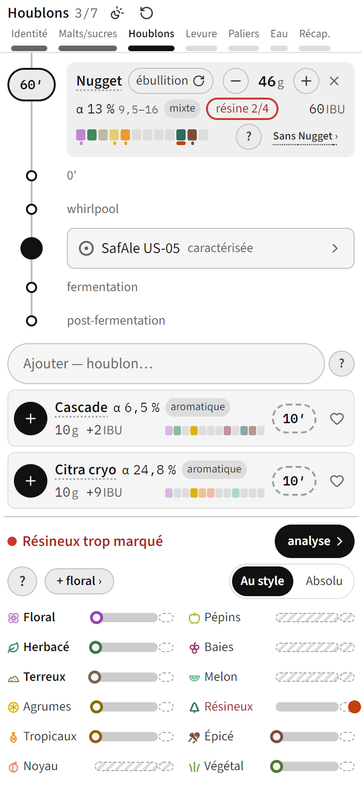
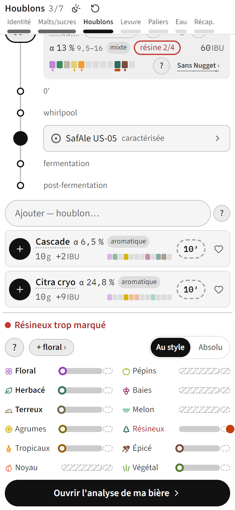
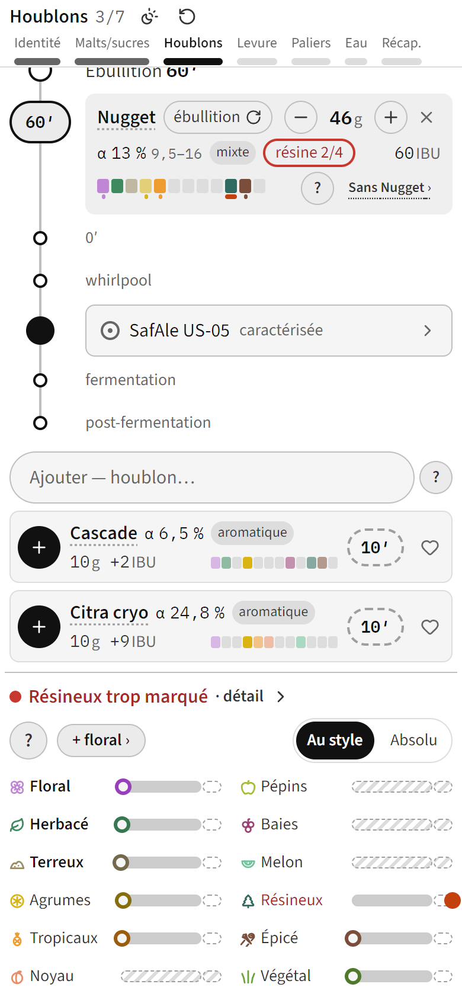

Ses mots, sur le « › » noir : « Seul bouton qui ouvre vraiment l'analyse. Peut, être amélioré ». Dans les trois, tout le bloc (l'alerte, chaque famille) ouvre l'onglet Ma bière d'un toucher.
Le « › » noir de sa base garde sa place et dit où il mène : « analyse › ».

Plus de chevron en tête : une barre pleine sous les familles, « Ouvrir l'analyse de ma bière › ».

L'alerte elle-même est l'entrée : « Résineux trop marqué · détail › ».
